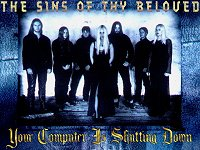
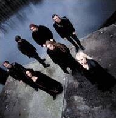

Esta banda norueguesa foi formada em novembro
de 1996 por Stig Johansen, Glenn Morten e Arild Christensen. Pouco
tempo depois, entraram Ola Aarrestad, Anita Auglend e Ingfrid
Stensland, para completarem a formação.
No início, chamava-se Purgatory,
mas por ser um nome comum e até mesmo haver outras bandas
com tal nome, adotaram The Sins of Thy Beloved em seu
primeiro trabalho, o MCD All Alone. O nome The Sins
of Thy Beloved tem origem na imaginação dos
integrantes; é fictício e escolhido justamente pelas
palavras do inglês arcaico.
A banda caracteriza-se pelo seu som Doom/Gothic
Metal. Por isso, muitas vezes comparada ao Tristania.
A viagem das sonoridades entre os timbres líricos de Anita
Auglend e o vocal agressivo de Glenn, na medida certa para o estilo,
descreve a atmosfera que é criada pelo grupo usando a consistência
dos temas que falam de amor, ódio, traição
e morte.
No começo de 1997, a banda entra em estúdio
para gravar algumas músicas demo. A partir desse ensaio,
o TSOTB escolheu três faixas para gravar All Alone.
Ainda em 1997, mais precisamente em setembro, o tecladista Anders
Thue entra na banda.
Em
janeiro de 1998 a música Silent Pain é
gravada. Desta vez com o acréscimo do violino afiado de
Pete Johansen, que tocou em várias outras bandas como,
The Tramps e Tristania. Sua presença intensifica a atmosfera
dark da banda. A música é distribuída para
várias gravadoras, entre elas a Napalm Records, que fecha
contrato em março do mesmo ano.
Em agosto, o The Sins of Thy Beloved inicia no
Sound Suite Studio, a gravação de seu primeiro trabalho,
intitulado Lake Of Sorrow.
Este nome reflete o clima romântico das
composições. As canções All Alone
e Worthy of You do trabalho anterior, sofrem uma releitura
e os arranjos são aprimorados. Destaque para a faixa de
introdução My Love, considerado um épico-gótico,
e a bela balada Until The Dark, onde o violino de Pete
chora, numa das mais dramáticas atuações.
No final de agosto de 1999, o TSOTB participa
de uma coletânea juntamente com Lacrimosa,
The Gathering, Nightwish,
Within Temptation,
Dreams of Sanity, Lacuna
Coil, entre outros. No mês de setembro, iniciam-se as
gravações do segundo álbum: Perpetual
Desolation. Em outubro é produzido um vídeo
de 45 minutos, que traz três músicas ao vivo (gravadas
em Oberwart, na Áustria), além de um clipe e uma
entrevista com o tecladista Anders Thue. No dia 3 de dezembro
a banda faz uma apresentação em Zürich.
O lançamento do álbum Perpetual
Desolation foi várias vezes adiado pela Napalm Records.
Apesar das gravações terem durado aproximadamente
dois meses, o disco chegou às lojas apenas em março
de 2000, numa tiragem de 10 mil cópias. O álbum
com qualidade de gravação e ótimas composições,
rapidamente se destaca no cenário Metal. Perpetual
Desolation é composto por ótimas canções,
como Forever, com seu violino introdutório seguido
de vocais rasgados e femininos, e Pandemonium, que mostra
toda a qualidade da vocalista Anita ao lado de arranjos de teclado
muito bem elaborados. Ainda nesse trabalho, a música Thing
That Should Not Be (Metallica), é regravada.
Em
abril de 2000 é lançado um vídeo de uma hora
de duração, gravado ao vivo na Polônia. No
dia 11 de julho, o TSOTB se apresenta no Lowlands Festival, na
Irlanda, já com a nova turnê do último álbum.
Em janeiro do ano seguinte, participa de mais uma coletânea
intitulada With Us or Against Us (Volume IV), com a faixa
World of Day. Neste álbum lançado pela
Napalm, ainda encontra-se bandas como Darkwell, Trail of Tears,
Dargaard, entre outras. No mesmo mês, a vocalista Anita
Auglend deixa a banda alegando estar cansada das viagens e não
haver tempo livre. Em seu lugar é convidada Hege-Marie
Aanby (Stavanger). Porém, ela não se adapta e deixa
a banda três meses depois. No final de junho, Anders Thue
também deixa o TSOTB por não poder conciliar os
estudos e carreira musical. Assim, a banda é obrigada a
cancelar sua agenda e dedicar-se exclusivamente ao novo álbum.
Em março de 2002, o TSOTB se apresenta
no Jæren Musikkfestival. A ex-vocalista Anita Auglend
participa como convidada.
O The Sins Of Thy Beloved
definitivamente deixa de ser considerada cópia de outras
bandas e aos poucos conquista seu espaço no cenário
atual. Com méritos resgata a essência Doom fortificando
esse gênero cada vez mais disseminado.
Por
Spectrum
Downloads
Disponíveis: